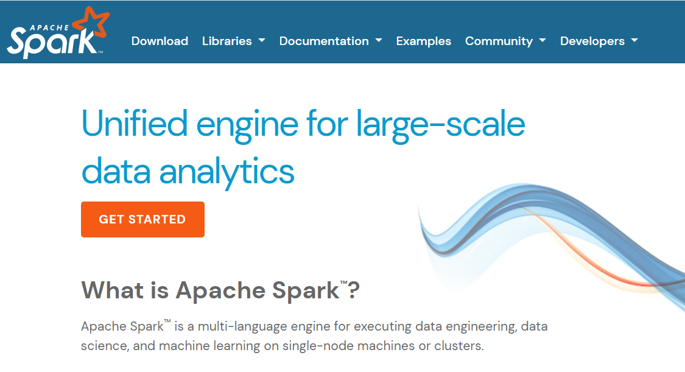

Apache Spark Course Book
2022-10-06
Chapter 1 Introduction
 The picture is from the website Apache Spark
This is a little book on Apache Spark. You can install Apache Spark in your machine and start learning with the following chapters. Each chapter has an image , which when clicked will go to a video which explains the topic.
- Spark Architecture in 6 minutes
- PySpark Introduction in 7 minutes
- Spark SQL Case Study with Used Car Dataset [ 1.4 GB ] in 10 minutes
- Lakehouse Architecture in 9 minutes
- Delta Tables Deep Dive in 14 minutes [ Case Study approach - Cricket Test Match ]